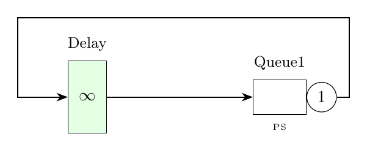
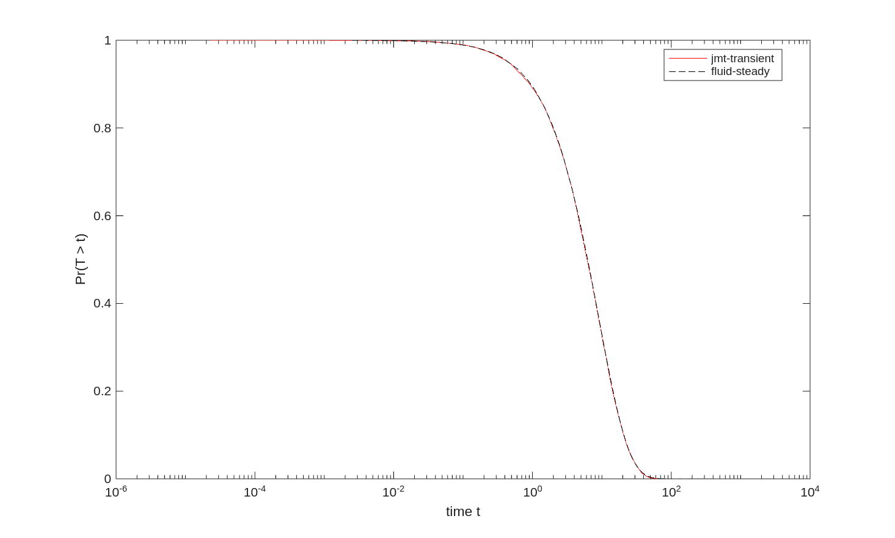

Tutorial 7: Response Time Distribution and Percentiles
This example illustrates the computation of response time percentiles in a queueing network model. We compare results from the Fluid solver (analytical steady-state) and JMT simulation (transient).

% Response time distribution and percentiles
model = Network('Model');
% Block 1: nodes
node{1} = Delay(model, 'Delay');
node{2} = Queue(model, 'Queue1', SchedStrategy.PS);
% Block 2: classes
jobclass{1} = ClosedClass(model, 'Class1', 5, node{1}, 0);
node{1}.setService(jobclass{1}, Exp(1.0));
node{2}.setService(jobclass{1}, Exp(0.5));
% Block 3: topology
model.link(Network.serialRouting(node{1},node{2}));
% Block 4: solution
RDfluid = FLD(model,'seed',23000).getCdfRespT();
RDsim = JMT(model,'seed',23000,'samples',1e4).getCdfRespT();
%% Plot results
if ~isempty(RDsim{2,1})
semilogx(RDsim{2,1}(:,2),1-RDsim{2,1}(:,1),'r'); hold on;
semilogx(RDfluid{2,1}(:,2),1-RDfluid{2,1}(:,1),'k--');
legend('jmt-transient','fluid-steady','Location','Best');
ylabel('Pr(T > t)'); xlabel('time t');
end// Response time distribution and percentiles
val model = Network("Model")
// Block 1: nodes
val delay = Delay(model, "Delay")
val queue = Queue(model, "Queue1", SchedStrategy.PS)
// Block 2: classes
val jobclass = ClosedClass(model, "Class1", 5, delay, 0)
delay.setService(jobclass, Exp(1.0))
queue.setService(jobclass, Exp(0.5))
// Block 3: topology
model.link(Network.serialRouting(delay, queue))
// Block 4: solution
val RDfluid = FLD(model, "seed", 23000).cdfRespT
val RDsim = JMT(model, "seed", 23000, "samples", 10000).cdfRespT
// Results can be plotted using external toolsfrom line_solver import *
import matplotlib.pyplot as plt
model = Network('Model')
# Block 1: nodes
delay = Delay(model, 'Delay')
queue = Queue(model, 'Queue1', SchedStrategy.PS)
# Block 2: classes
jobclass = ClosedClass(model, 'Class1', 5, delay, 0)
delay.set_service(jobclass, Exp(1.0))
queue.set_service(jobclass, Exp(0.5))
# Block 3: topology
model.link(Network.serial_routing(delay, queue))
# Block 4: solution
RDfluid = FLD(model).cdf_resp_t()
RDsim = JMT(model, seed=23000, samples=10000).cdf_resp_t()
# Plot results
if RDsim[1][0] is not None:
plt.semilogx(RDsim[1][0][:, 1], 1 - RDsim[1][0][:, 0], 'r-', label='jmt-transient')
plt.semilogx(RDfluid[1][0][:, 1], 1 - RDfluid[1][0][:, 0], 'k--', label='fluid-steady')
plt.legend()
plt.ylabel('Pr(T > t)')
plt.xlabel('time t')
plt.show()Expected Output
The plot shows the complementary CDF of response times comparing JMT simulation (transient) with Fluid solver (steady-state):
